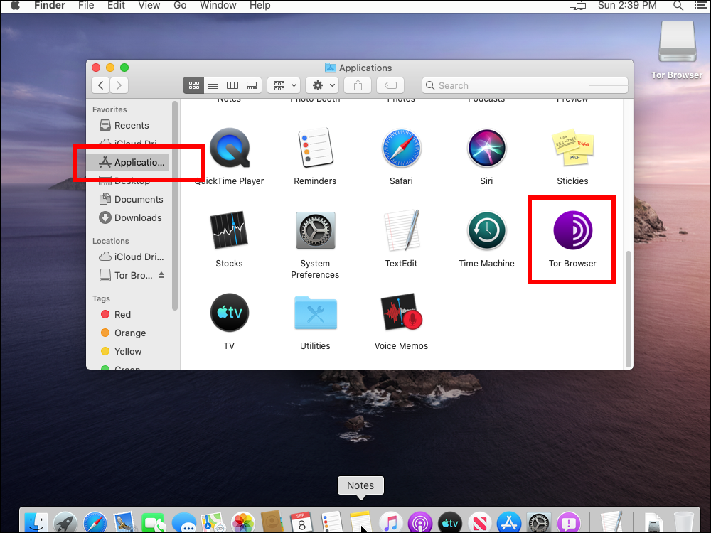
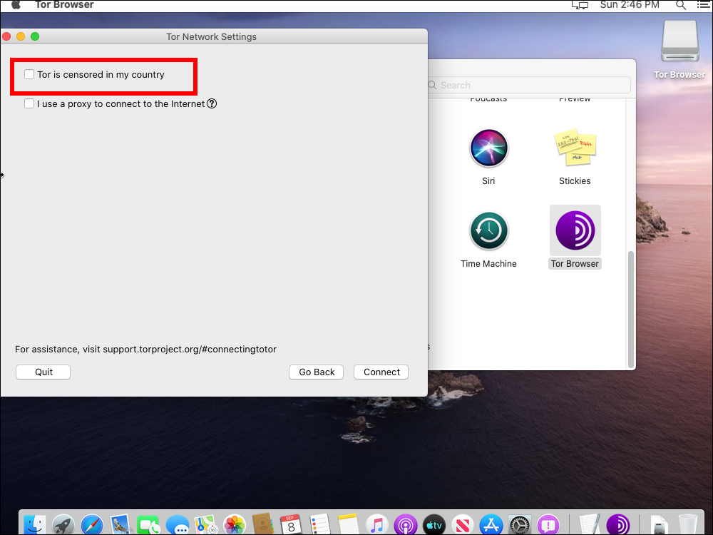

September 9, 2019
In most countries, Tor Browser version 8.5.5 is available from the official site at https://www.torproject.org/download/.
Select the macOS platform. If asked whether you want to allow downloads on "dist.torproject.org", click Allow.
It is a large download of over 70 MB.
In some countries, you cannot reach the official site. In this case, Tor Browser version 8.0.2 is mirrored on Github:
The Github mirror is also linked to from:
That site lists alternative methods that may work:
gettor@torproject.org. Send the word help in the body of the message to learn how to interact with it.gettor@torproject.org using your favorite XMPP client. Simply enter help in an XMPP message to learn how to interact with it.@get_tor (you don't need to follow). Send the word help in a direct message to learn how to interact with it.In Finder, locate the download. It has a name such as TorBrowser-8.5.5-osx64-en-US.dmg.
Double-click on the DMG file.
Drag Tor Browser to Applications.
In Finder, locate your Applications.

Right-click on Tor Browser, and select Open.
In macOS Catalina, a message may appear to say Tor Browser can't be opened because Apple cannot check it for malicious software. Click Open anyway.
In most countries, you can just press Connect.
In countries where Tor is censored, click Configure.
Check the box for Tor is censored in my country.

Select a built-in bridge for meek-azure (works in China). Click Connect.
You will need to wait several minutes for Tor Browser to establish a connection to the Tor network.
The Tor initial screen then appears.
Visit https://check.torproject.org.
You should see a message: "Congratulations. This browser is configured to use Tor."